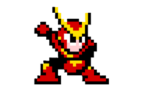
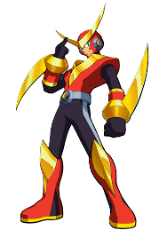

Well I cannot put this stage off any longer... time for Quick Man's stage. This stage is rather infamous, and for good reason. While the Force Beams are easy enough to deal with after some thorough memorization, that still does not deal with all the threats of the stage. The Sniper Joes in the final room are actually an incredible pain to deal with as if you try to move back to give yourself more space, you are likely to scroll another one onto the screen causing for pretty much guaranteed failure to finish the stage without taking a hit.
Released in 1988, Mega Man 2 is the best-selling game in the series, with over 1.51 million copies sold, and is widely credited with saving the franchise after low initial sales of the first game.Developed in only three to four months, it established staple features like eight robot masters, E-Tanks, and a password system.
In Mega Man 2, Quick Man is a fast, combat-oriented Robot Master created by Dr. Wily, designed to counter Mega Man using speed and agility. He servesas a challenging boss, utilizing high-speed dashes, jumping attacks, and the Quick Boomerang weapon. He is heavily inspired by Elec Man's design and is known for his immense speed.